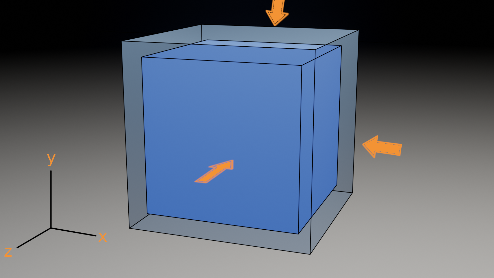

Anwendung von nichtlinearer Akustik für Ultraschall
Kolloquium
Christoph-Alexander Hermanns
Schall
Schall ist das Resultat einer sich durch ein Medium periodisch ausbreitenden Störung.
Die Störung wird durch die mechanische Verschiebung der Teilchen des Mediums verursacht.
Dieses Phänomen wird als Schallwelle charakterisiert.
Bewegung im Medium

Oszillierende Bewegung
Schall - Einteilung nach Frequenz

Abhängig von der Frequzenz wird Schall eingeteilt:
Infraschall:
unter 16 Hz: Waschmaschinen, Heizungen
Hörbarer Schall:
16 Hz - 20 kHz: Sprache, Musik
Ultraschall:
über 16 kHz: Delfine, Feldermäuse - Echoortung
Zustandsübergänge des Mediums

Medium ist Kompressibel.
Verlauf der Zustandsänderungen

Aussagenmaß der Schallgeschwindigkeit
Kontinuität im Medium
Systemgrößen Druck, Dichte und Geschwindigkeit der Bewegung bleiben erhalten.
Bildung der Schallwelle im Raum

Ausbreitung der Schallwelle

Kurzzusammenfassung
Bewegung im Medium
Kontinuität des Mediums
Zustände des Mediums
Technische Anwendung von Schall
Lautsprecher - Richtcharakteristik
Schall niedriger Frequenz:

Ein Lautsprecher mit schwacher Richtcharakteristik.

Die Ausbreitung von hörbaren Schall.
Änderung der Fläche

Änderung der Frequenz

Schall hoher Frequenz:

Ein Lautsprecher mit starker Richtcharakteristik.
Besonderheit des Mediums Luft
Starke Dämpfung hoher Frequenzen.
Übergänge der Zustände sind nichtlinear.

Nichtlineare Übergänge der Zustände.

Entwickelte Funktion der Bewegungsgeschwindigkeit.
- Höhere Harmonische im Schwingung.
Anwendung für Ultraschall
- Hohe Frequenzen (Ultraschall) - starke Richtcharakteristik.
- Hohe Energie bei der Ausbreitung in Luft.
Konsequenz:
Nichtlinearität liegt nutzbaren Anwendungen zugrunde.
Ultraschall zu Hörschall
Amplituden Modulation wandelt Ultraschallfrequenzen zu hörbaren Schall.
Prinzip der Amplituden Modulation

Bildung der hörbaren Differenzfrequenz.

Einflüsse durch hochfrequente Komponenten verschwinden.
Das Signal wird geglättet - bzw. demoduliert.

Hörbarer Schall entsteht nicht an der mechanischen Quelle, sondern nach einiger Distanz in der Luft.
Fazit
Die Nichtlinearität der Luft kann genutzt werden
um Frequenzen aus dem Ultraschallbereich
für besondere hörakustische Anwendungen nutzbar zu machen.
Danke für die Aufmerksamkeit

Weiterführende Links
Framework für Schallausbreitung
Matlab-plugin für Ultraschall
Hersteller von Richt-Lautsprechern
Bei weiteren Fragen:
hermannschris@googlemail.com